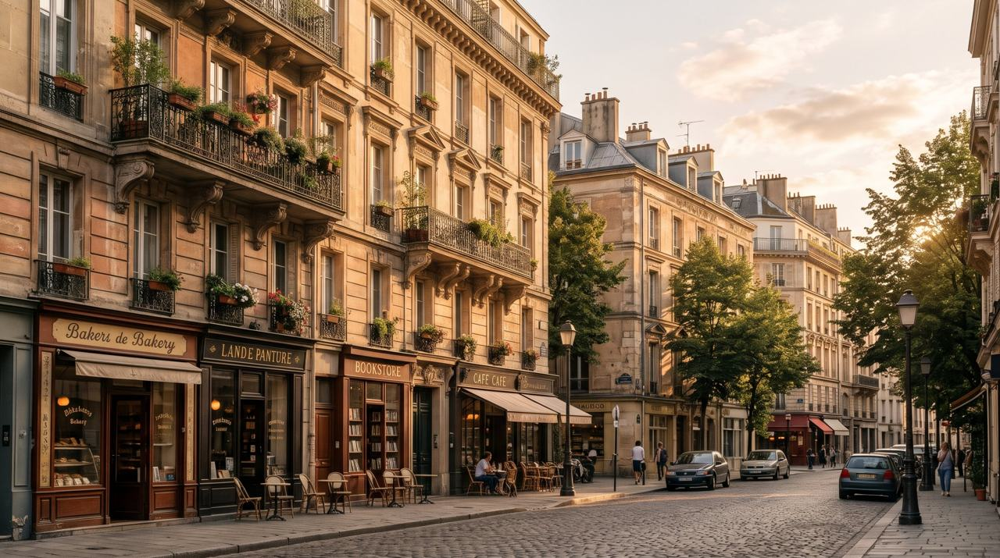
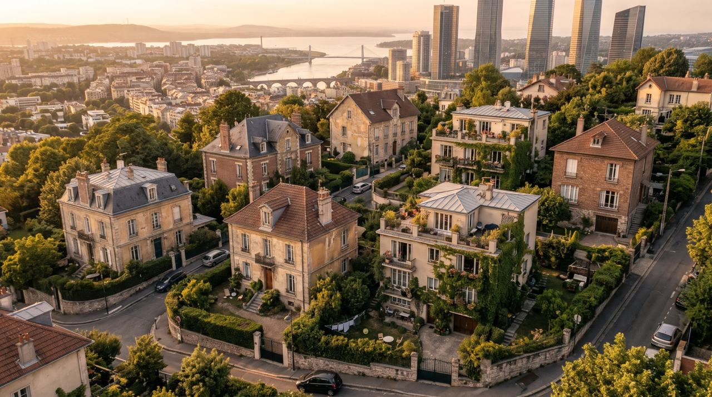

Old TownConcept art
Lumen Bay is a living model: close a bridge, flood the river, cut the buses, and the effects travel through traffic, jobs, money, health and fairness.
Open the simulatorClose a bridge and traffic finds the next one.
Every decision spends one shared budget.
Who gains and who loses, each counted once.
Ten simulated cities, one honest verdict.
Lumen Bay is a made-up port city with a glass business district, an old quarter around a clock tower, a harbour of cranes, and a river that only three bridges cross. That is what makes it fragile, and what makes it worth simulating.
Every one of its 15,000 residents is modelled: where they live, how they choose to get to work, and what a closed road does to their morning. The simulator runs on the same layout of districts, roads and bridges.
See what happens when a bridge closes

Photographic images are AI-generated concept art of the fictional Lumen Bay. Lumen Bay is not a real place.
The markers on the photograph show what the model decides: Crown Bridge is closed, so its traffic is gone and Kings Bridge takes it. Marker positions are illustrative. The figures come from the simulator.
The simulator shows every step of the chain, so you can ask “why did this happen?” and get a calculated answer. Here, with the bridge closed, the hospital is harder to reach.
Closed or flooded roads lose their traffic; the rest slow down as they fill up.
142% loadPeople re-decide how to travel: car, bus or work from home, from time and cost.
6.5% no routeLate and stranded workers cost the city output, and shops lose customers.
1,132k a dayLower income and extra costs push the budget negative, which triggers austerity.
−11k a dayAusterity cuts buses, so the commute gets worse again. The ledger counts who ends up better or worse off.
hospital access 67.7%Pick a problem, try a response, and see who gains and who loses, with a range showing how sure the model is. It runs in your browser with nothing to install.
Open the simulator